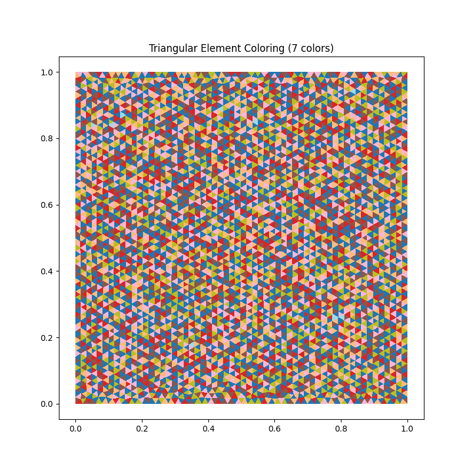
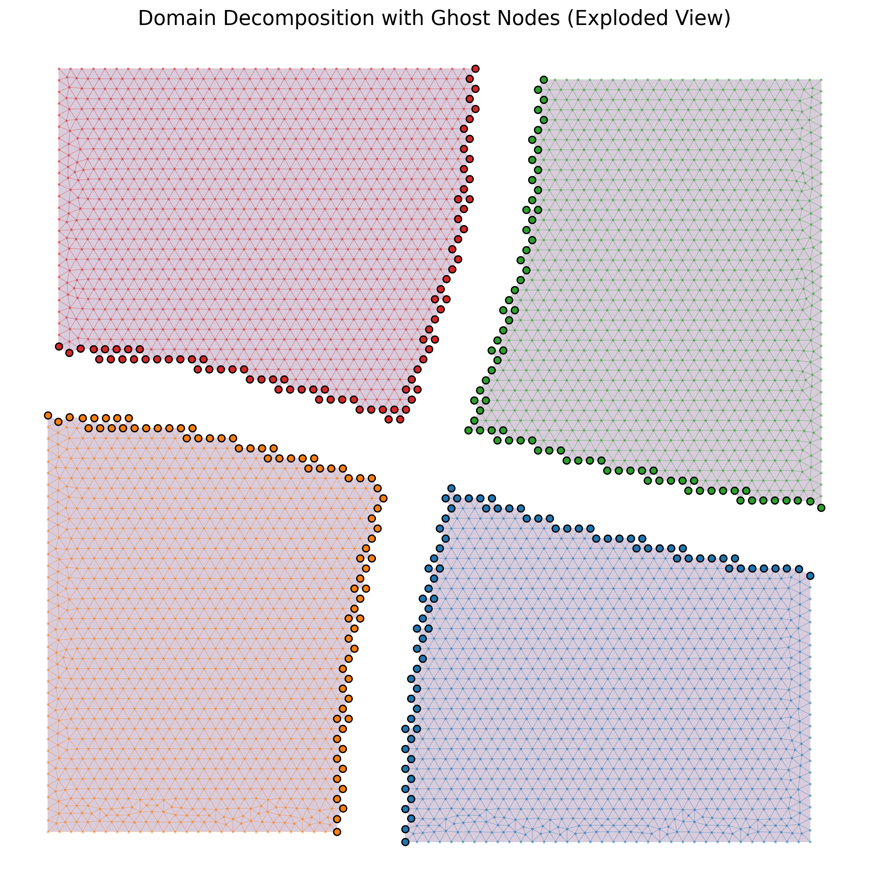

Distributed FEM¶
Three scripts in examples/distributed/ cover the building blocks
for multi-GPU FEM in TensorMesh: graph coloring on the element
adjacency graph, spectral domain decomposition, and a
single-GPU-vs-multi-GPU assembly benchmark on a structured
tetrahedral cube.
Caution
The distributed layer is still under active development. The
building blocks below (coloring, partitioning, multi-GPU
assembly) work and the benchmarks are real, but the public API is
not yet stable and the User Guide deliberately
does not document it as a first-class workflow. The next step is
to couple it with torch-sla’s distributed linear solver, so
that assembly and solve both run across multiple GPUs — the
goal being to tackle very large-scale industrial problems that do
not fit on a single device. Until then, treat the examples here
as recipes to learn from, not as a stable interface.
Element-graph coloring — graph_coloring.py¶
Race-free atomic-add assembly on GPU needs a coloring of the
element-adjacency graph: elements that touch a common DOF must
not share a color, so each color class can be scattered into the
global matrix in parallel. mesh.color() does this in one call,
running a parallel Welsh-Powell-style heuristic on the GPU when
available:
from tensormesh.dataset.mesh import gen_rectangle
mesh = gen_rectangle(chara_length=1.0/50, element_type="tri")
mesh.to(device)
colors = mesh.color() # one int per element
n_colors = colors.max().item() + 1
print(f"Used {n_colors} colors.")
For a regular triangulation of the unit square the algorithm typically finds 6–8 colors — close to the optimal chromatic number for a 2D triangle adjacency graph. The visualization paints each element by its color class, which gives the familiar striped / banded pattern.
{kind=link}

Fig. 60 graph_coloring.py output: a triangular mesh of the unit
square painted by element color class. The Welsh-Powell
heuristic finds 7 colors here; elements sharing a color
never share a node, so each color class can be assembled in
parallel without write conflicts.¶
Spectral domain decomposition — graph_partition.py¶
For multi-GPU work the mesh has to be split into n_parts
balanced subdomains with small interfaces. partition_mesh
with method="spectral" computes the Fiedler vector of the
graph Laplacian and recursively bisects:
from tensormesh.mesh.partition import partition_mesh
submeshes = partition_mesh(mesh, n_parts=4, method="spectral")
The returned list of Mesh objects each carries
ghost nodes — the boundary nodes that belong to two subdomains
get duplicated, with their original global IDs stored in
submesh.point_data["orig_nid"]. The script’s exploded-view
visualization separates the four subdomains in space and circles
the shared interface nodes — the geometric picture you usually
have to draw on a whiteboard to explain a domain decomposition.
{kind=link}

Fig. 61 graph_partition.py output: a 4-way spectral partition of
the unit square in exploded view. Each subdomain is rendered
in its own color; the highlighted dots along each subdomain’s
shared boundary are the ghost nodes — duplicated copies of
the interface vertices that each rank owns locally, with the
original global IDs preserved in
submesh.point_data["orig_nid"].¶
Multi-GPU assembly benchmark — benchmark_assembly.py¶
The headline distributed-FEM benchmark. A structured tetrahedral
cube of size \((n+1)^3\) points and \(5 n^3\) tets is
assembled (i) on a single GPU, (ii) across all visible GPUs via
torch.multiprocessing. The driver sweeps \(n\) from a
configurable starting size until either path runs out of memory.
The interesting machinery lives in
DistributedMesh, which wraps the
spectral partition + per-subdomain ghost-node bookkeeping into a
single object:
import torch.multiprocessing as mp
from tensormesh.distributed import DistributedMesh
def _mp_assemble_worker(rank, submesh, device_id, q_order, return_dict):
device = torch.device(f"cuda:{device_id}")
torch.cuda.set_device(device)
submesh.to(device)
asm = tm.LaplaceElementAssembler.from_mesh(
submesh, quadrature_order=q_order
)
K_local = asm()
# …translate K_local.row/col through orig_nid into global indices…
dmesh = DistributedMesh(mesh, num_partitions=num_partitions)
manager = mp.Manager(); return_dict = manager.dict()
procs = [
mp.Process(target=_mp_assemble_worker,
args=(i, dmesh.submeshes[i], i, q_order, return_dict))
for i in range(num_partitions)
]
for p in procs: p.start()
for p in procs: p.join()
A few details that matter:
One process per GPU.
torch.multiprocessingwithset_start_method("spawn")gives each process its own Python interpreter, sidestepping the GIL. Threading would not help on CPU-bound assembly.Ghost-node bookkeeping. Each worker assembles a local
SparseMatrixwhose row/col are local DOF indices; the driver translates them throughorig_nidinto global indices before stitching the partial matrices together. The user-visible cost is a single GPU→CPU copy per worker.Per-card memory. The benchmark’s “mem save” column reports
single_gpu_peak / max_per_card_peak— typically close tonum_partitionsfor the assembly step itself, since each worker only stores its own subdomain.
A representative slice of the output table:
n | Points | Tets | 1-GPU time | 1-GPU mem | N-GPU wall N-GPU max_t N-GPU mem/card | Speedup Mem save
----------------------------------------------------------------------------------------------------------------
30 | 29,791 | 135,000 | 0.42 s | 0.5 GB | 0.18 s 0.11 s 0.16 GB | 2.3x 3.1x
50 | 132,651 | 625,000 | 1.90 s | 2.3 GB | 0.55 s 0.34 s 0.62 GB | 3.5x 3.7x
… … … … … … … … … …
CLI:
python benchmark_assembly.py # auto-detect GPUs
python benchmark_assembly.py --partitions 4 --start 30 --max 200
Running the examples¶
cd examples/distributed
python graph_coloring.py # writes graph_coloring_result.png
python graph_partition.py # writes graph_partition_exploded.png
python benchmark_assembly.py # prints benchmark table
All three are lightweight and run on a single workstation; only
benchmark_assembly.py benefits from multiple GPUs.
What’s next¶
Concepts — the module map mentions
tensormesh.distributedas a research path.Batched Workflows — single-GPU batching patterns that often suffice before reaching for multi-GPU.
Basics & Visualization —
plot_mesh.pyhas the adjacency-graph visualizations these algorithms operate on.